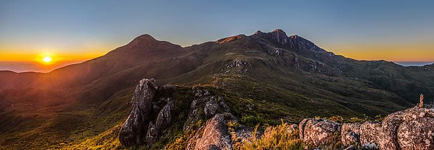

Localizado na Serra do Caparaó, na divisa dos estados de Minas Gerais e Espírito Santo, o Parque Nacional do Caparaó é um dos ícones do montanhismo no Brasil e abriga o terceiro ponto mais alto do País, o Pico da Bandeira, que tem 2.892 metros de altitude. Além dele, estão na Unidade de Conservação (UC) cinco dos dez picos mais altos de todo o território nacional. A Unidade abrange um território de aproximadamente 31,8 mil hectares. Cerca de 80% do parque está no estado do Espírito Santo. Os maiores picos ficam na divisa dos estados, destacando-se o Pico da Bandeira, com 2.892 metros, o Pico 2 ou Pico do Cruzeiro, com 2.852 metros, o Pico do Calçado com 2.849 metros e o Pico do Calçado Mirim com 2.818 metros. O Pico do Cristal, com 2.770 metros fica exclusivamente em território mineiro. O parque abriga ainda outros picos, menores em tamanho, mas também de altitudes consideráveis, como o Morro da Cruz do Negro (2.658 metros), o Pico da Pedra Roxa (2.649 metros), o Pico dos Cabritos ou do Tesouro (2.620 metros), o Pico do Tesourinho (2.584 metros), e a Pedra Menina (2.037 metros) todos em território capixaba.
A Serra do Caparaó é uma das mais representativas áreas de preservação da mata atlântica em território Capixaba. O Parque guarda amostras singulares de campos de altitude (tipo de vegetação peculiar, cujas características são fortemente influenciadas pelas condições de solo, clima e altitude do maciço do Caparaó), relevante patrimônio geológico, além de proteger nascentes de três importantes bacias hidrográficas (Rios Itabapoana, Itapemirim e Doce) e diversas espécies endêmicas e ameaçadas de extinção da fauna e flora.
